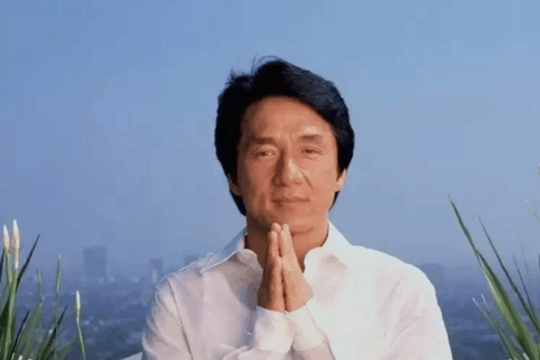

成龙
+关注
-
9
影人综合排名
-
6572
粉丝
-
77.3亿
主演作品票房
简介
成龙，7岁拜京剧武生于占元为师，“七小福”之一。1971年，开始从事武师的工作，主要在邵氏担任跑龙套的角色。70年代，曾模仿李小龙的形象拍片，但始终无法走红。1975年，新天地公司成立，签了成龙，安排他拍一两部片，甚至三级片《花飞满城春》。但票房都很惨淡。1978年因《蛇形刁手》《醉拳》而走红。与嘉禾电影公司签约后发展逐渐顺利。模仿巴斯特基顿等默片明星拍摄功夫喜剧，形成自己独特的风格，在两岸三地有很高人气。2001年被英皇集团挖角，加入英皇集团。后到大陆发展拍戏。然而也因一些言论与负面新闻（力挺薄瓜瓜，婚外情，代言霸王洗发水，对两岸三地政局发表言论等）使得成龙在香港台湾公信力下降垫底。电影代表作有《A计划》系列，《警察故事》系列，《尖峰时刻》系列等。凭借《红番区》《我是谁》《十二生肖》三度获得香港电影金像奖最佳动作指导奖。凭借《警察故事III超级警察》《重案组》两度获得台湾电影金马奖最佳男主角奖。2016年11月12日，获颁第89届奥斯卡终身成就奖，成为第一个获得奥斯卡终身成就奖的华人，也是第四个获此殊荣的亚洲人。